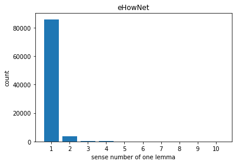
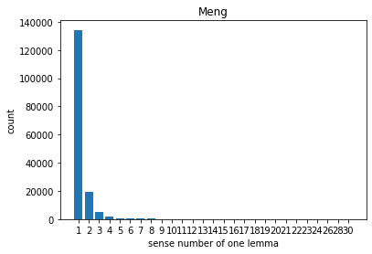
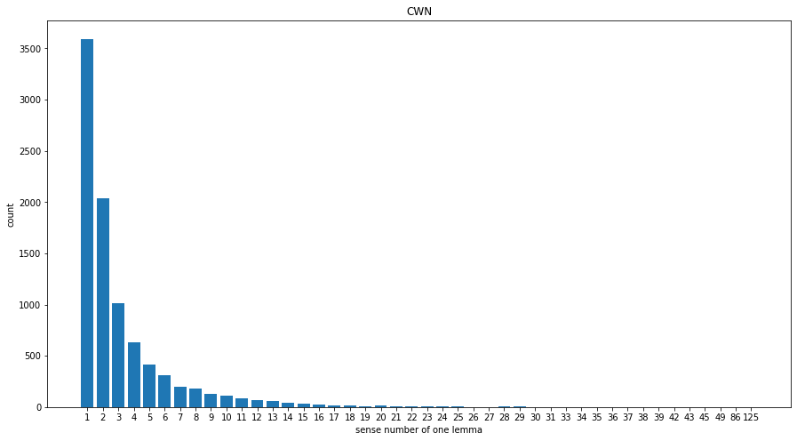
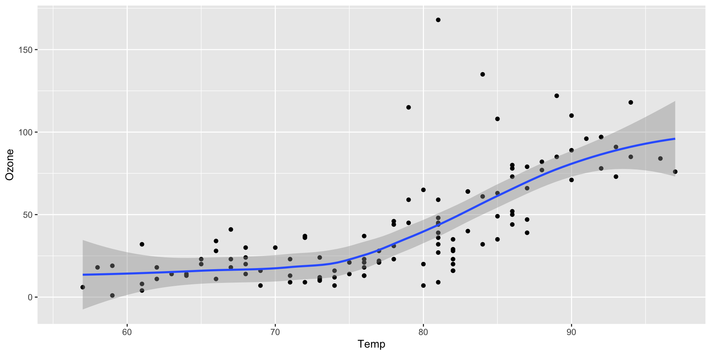
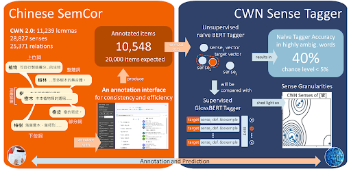
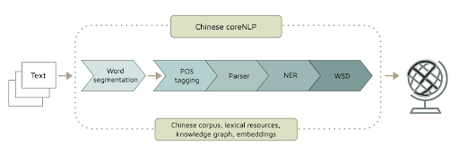
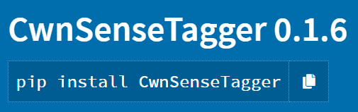
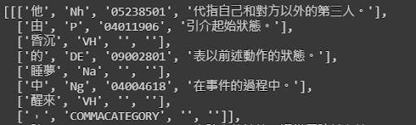
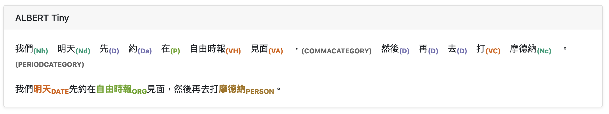
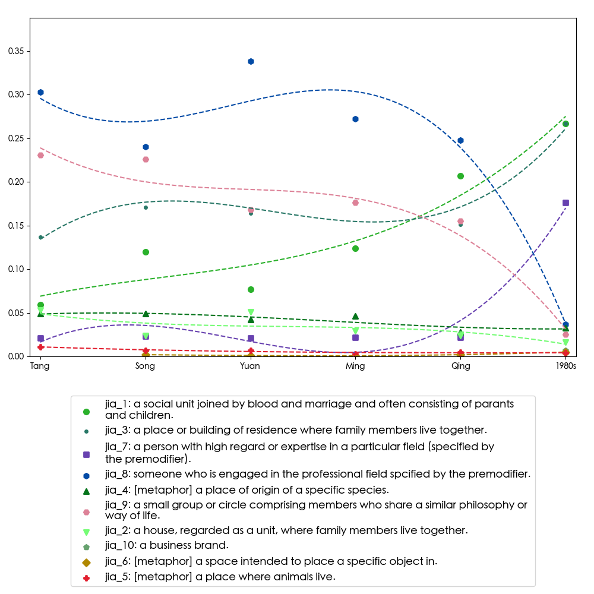

Plot.rectY(filtered,
Plot.binX(
{y: "count"},
{x: "body_mass_g", fill: "species", thresholds: 20}
))
.plot({
facet: {
data: filtered,
x: "sex",
y: "species",
marginRight: 80
},
marks: [
Plot.frame(),
]
}
)Chinese(s) in Chinese Wordnet
Synchronic and Diachronic Perspectives
Shu-Kai Hsieh
National Taiwan University
Nov 2, 2022
TOC
- Background
- Chinese Wordnet 2.0
- Challenges and Future Work
Background
Sinica BOW (C.-R. Huang, Chang, and Lee (2004))
Chinese Wordnet at Academia Sinica
Chinese Wordnet at NTU Taiwan
Note
Note that there are many Chinese Wordnet(s).
WordNet architecture
- synset (synonymous set)
- Lexical relations
Chinese Wordnet
Follow PWN (in comparison with Sinica BOW)
Word segmentation principle (C.-R. Huang, Hsieh, and Chen 2017)
Corpus-based decision
Manually created (sense distinction, gloss with controlled vocabulary, etc)
History and Status qua
- latest release 2022
CWN 2.0
- The most comprehensive and fine-grained sense repository and network in Chinese
Theories
Meaning facets vs senses
(co-predication)
Leveraging Morpho-semantic relations
Gloss as lexicographic resources with add-ons annotations
Data Statistics
Zipf’s law (no surprise)
- Most words have small number of senses (Zipf’s law)
Comparison with others
- CWN is the best candidate
  
test
Gloss statistics
Figure 1 further explores the impact of temperature on ozone level.
Figure 1: Temperature and ozone level.
GraphAPI and Visualization

Network Visualization
Computational Semantic Representations
- human curated and machine generated lexical semantic resources
- open-sourced (github)
SemCor manually sense-tagged corpus

Word Sense Tagger
WSD: The Problems
The task as currently defined does not allow for generalization over different words \(\rightarrow\) learning is word-specific.
Need training data for every sense of every word, and no chance with unknown words. (unsupervised approaches perform consistently worse than supervised approaches)
Cannot capture the sense alternation regularities 
Distributed approach to model the ‘Gradience’
gradience is found is many linguistic categories.
Regular polysemy detection: Using word vector (DI PIETRO 2013)or sense vector (Lopukhina and Lopukhin 2016) to detect sense alternations (such as
FOODorANIMAL)Recent (contextualized) vector representation could help us in locating where a word meaning is on the continuum (/in the multidimensional semantic space).
WSD with Transformer (1)
- Leveraging wordnet glosses. using
GlossBert(L. Huang et al. 2019)- a BERT model for word sense disambiguation with gloss knowledge.
- Our extended
GlossBertmodel on CWN gloss+SemCor reports 82% accuracy.
Word Sense Tagger
- APIs (GlossBert version) released in 2021


Word Sense frequencies
Now we have chance to empirically explore the dominancy of word senses. For both lexical semantics and psycholinguistics
- e.g., ‘開’ (kai1,‘open’) has more dominant blossom sense over others (based on randomly chosen 300 sentences in ASBC corpus)
Word Sense Embeddings
- we use our tagger to automatically tag ca. 5 millions word tokens in ASBC, indexed the annotated sense.
- word sense frequency data are calculated out via the tags.
- tokenize the index and use word2vec to get the word sense embeddings.
Other related works
- Resolving Regular Polysemy in Named Entities (Hsieh et al. submitted)
gloss2vec- Jacob character: -Chinese character (root morpheme) lies in the meaning core
Regular Polysemy
Challenges and On-going Works
wordhoodhaunting issuesOntolex
Construction Sense Disambiguation
- Construction has its own sense
- ( ‘還在那邊’)
Archaic and Modern sense
Diachronic word sense tracking
Mandarin Varieties
- ‘真香’，
- chivar
Ontologies
- synset-structured (lexicalized) ontology doesn’t (seem) work well
Conclusions
Chinese(s) are neighbors themselves.
Wordnet framework serves as a mirror for Chinese synchronic and diachronic varieties.
Reference
DI PIETRO, GIULIA. 2013. “Regular Polysemy: A Distributional Semantic Approach.”
Huang, Chu-Ren, Ru-Yng Chang, and Hshiang-Pin Lee. 2004. “Sinica BOW (Bilingual Ontological Wordnet): Integration of Bilingual WordNet and SUMO.” In LREC.
Huang, Chu-Ren, Shu-Kai Hsieh, and Keh-Jiann Chen. 2017. Mandarin Chinese Words and Parts of Speech: A Corpus-Based Study. Routledge.
Huang, Luyao, Chi Sun, Xipeng Qiu, and Xuanjing Huang. 2019. “GlossBERT: BERT for Word Sense Disambiguation with Gloss Knowledge.” arXiv Preprint arXiv:1908.07245.
Lopukhina, Anastasiya, and Konstantin Lopukhin. 2016. “Regular Polysemy: From Sense Vectors to Sense Patterns.” In Proceedings of the 5th Workshop on Cognitive Aspects of the Lexicon (CogALex-v), 19–23.